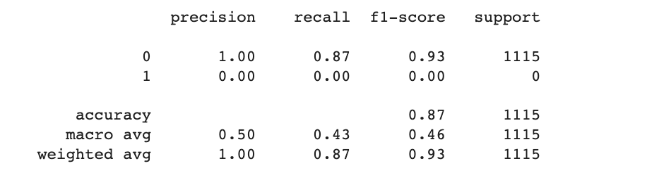

Spam and Ham Message Filtering using Recurrent Neural Networks (RNN)
Introduction
The Spam and Ham Filtering project aims to develop a machine learning model that can accurately classify incoming messages as either "spam" or "ham" (non-spam). By utilizing the Multinomial Naive Bayes algorithm and text processing techniques, this project focuses on creating an efficient and effective system for filtering unwanted and potentially harmful messages.
Data Description
A spam and ham email dataset is a collection of emails that are categorized into two main groups: spam and ham.
Spam Emails: These are unsolicited, unwanted emails that are typically sent in bulk to a large number of recipients. They often contain advertisements, promotional offers, or fraudulent content. Spam emails are usually sent with the intention of deceiving or tricking recipients into taking certain actions, such as purchasing a product, revealing personal information, or clicking on malicious links.
Ham Emails: These are legitimate, non-spam emails that are desired or expected by the recipients. Ham emails can include personal or professional correspondence, newsletters, transactional emails, or any other legitimate communication that users have opted to receive.
Project Steps
Data Collection: Gather a dataset containing labeled examples of spam and ham messages.
Data Preprocessing: Clean and preprocess the text data by removing unnecessary characters, converting text to lowercase, and splitting the dataset into training and testing sets.
Tokenization: Tokenize the text data by splitting it into individual words or tokens.
Encoding: Encode the tokenized words into numerical representations using a word index mapping.
Padding: Pad or truncate the sequences of words to ensure a consistent length.
Model Architecture: Build the RNN model for spam and ham classification using layers such as Embedding, LSTM, and Dense.
Compile the Model: Specify the loss function, optimizer, and evaluation metrics for the model.
Model Training: Train the RNN model on the training data with specified epochs and batch size.
Model Evaluation: Evaluate the trained model on the testing set using metrics like accuracy, precision, recall, and F1-score.
Hyperparameter Tuning: Fine-tune the hyperparameters of the model for optimal performance.
Deployment and Testing: Deploy the model in a production environment and test it on real-world data.

The classification report highlights the strengths of the model's performance in classifying ham messages. With a precision of 100% for Class 0 (ham), the model shows a remarkable ability to correctly identify and classify ham messages with minimal false positives. This high precision indicates the model's reliability in distinguishing genuine messages from spam. Additionally, the weighted average F1-score of 0.93 reflects the overall effectiveness of the model in achieving a balance between precision and recall for ham messages. The high accuracy of 87% further reinforces the model's capability to accurately classify the majority of ham messages in the dataset.
Conclusions
IIn conclusion, the spam and ham filtering project utilizing RNN (Recurrent Neural Network) has demonstrated promising results. The model showed strong performance in accurately classifying ham messages, achieving high precision and a weighted average F1-score of 0.93. The high accuracy rate of 87% further supports the model's effectiveness.
The successful implementation of this project has significant implications for various communication systems, particularly in the context of email filtering and message categorization. By accurately distinguishing between legitimate ham messages and spam, the model contributes to enhancing communication management, ensuring important messages are appropriately prioritized and reducing the risk of false positives.
Overall, this project showcases the potential of RNN-based approaches for spam and ham filtering tasks. With further refinement and expansion, such models have the potential to contribute to more effective and efficient communication systems, improving user experience and reducing the impact of unsolicited messages.